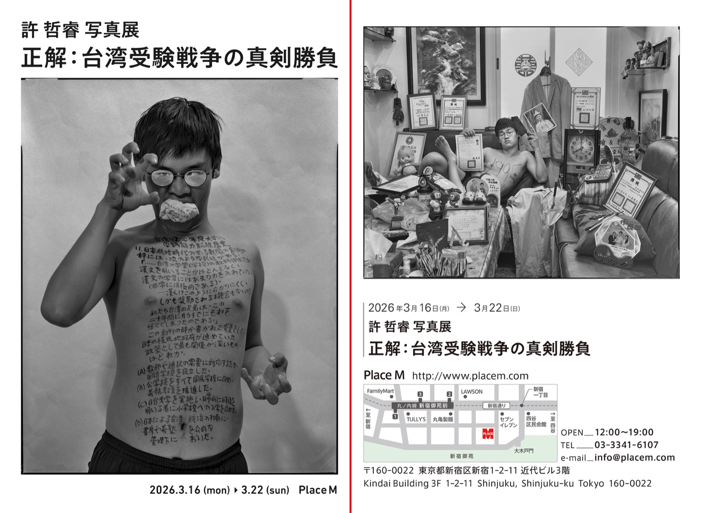
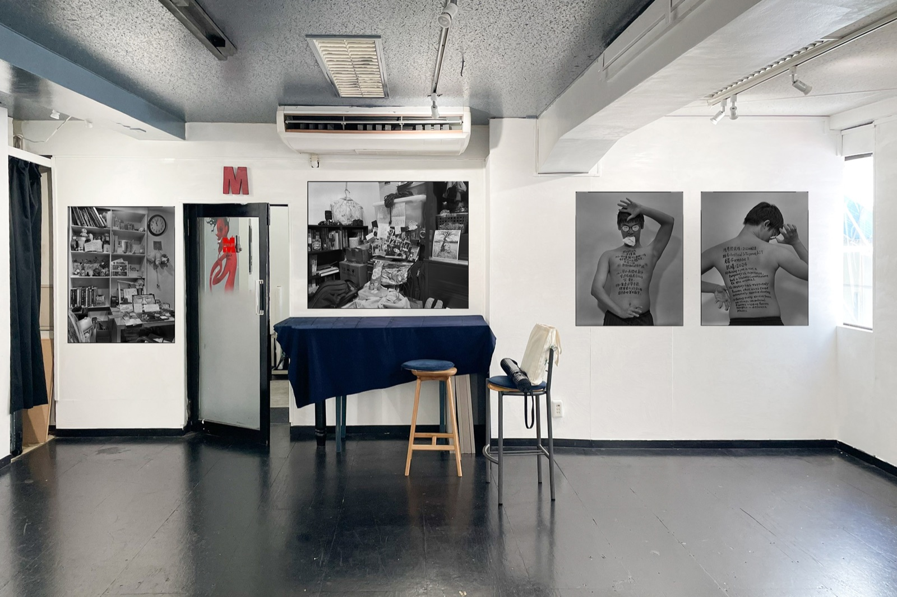
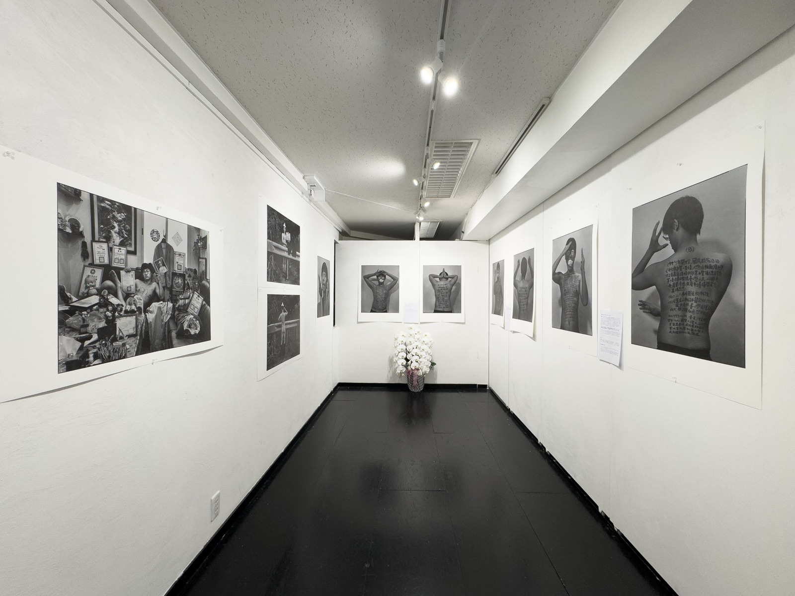
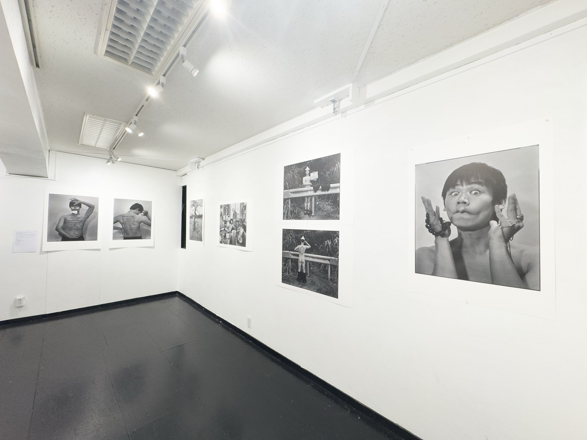
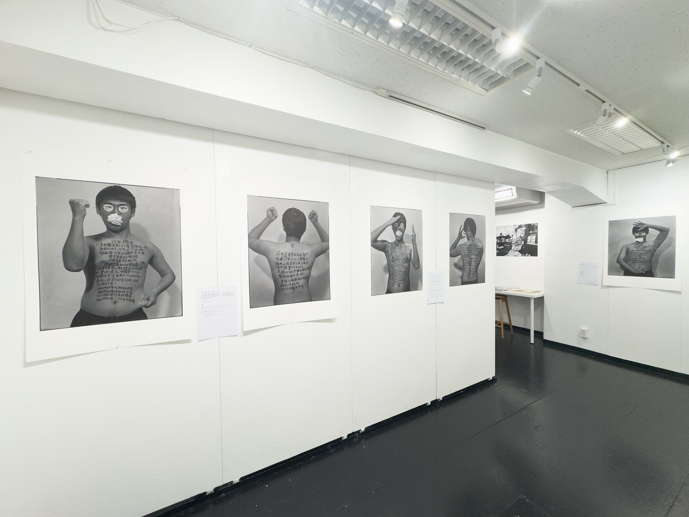
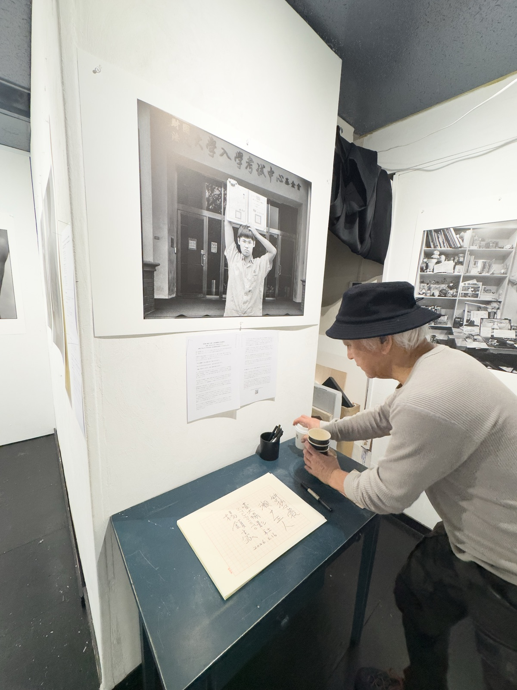
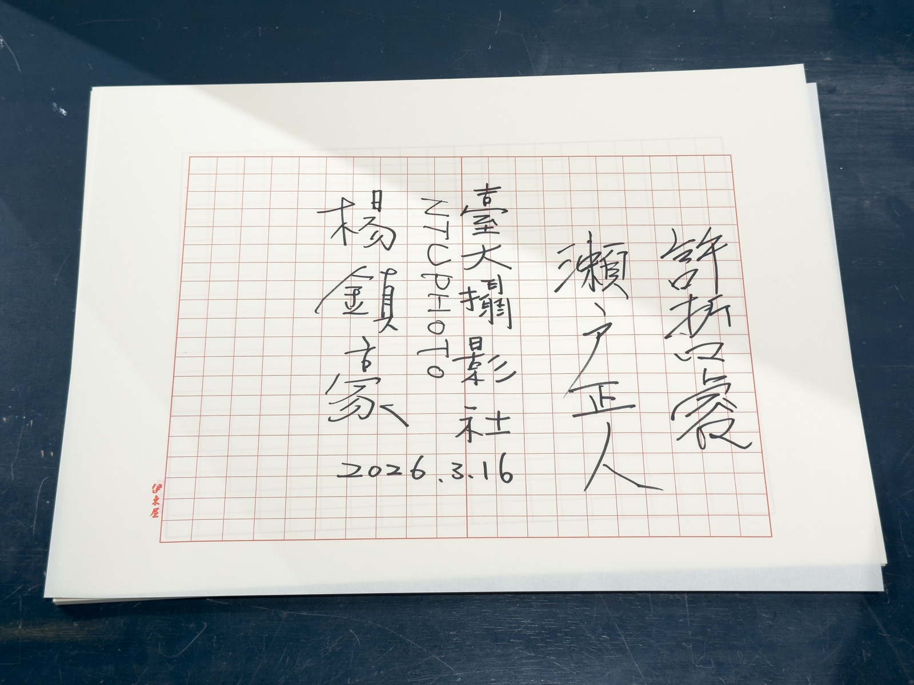
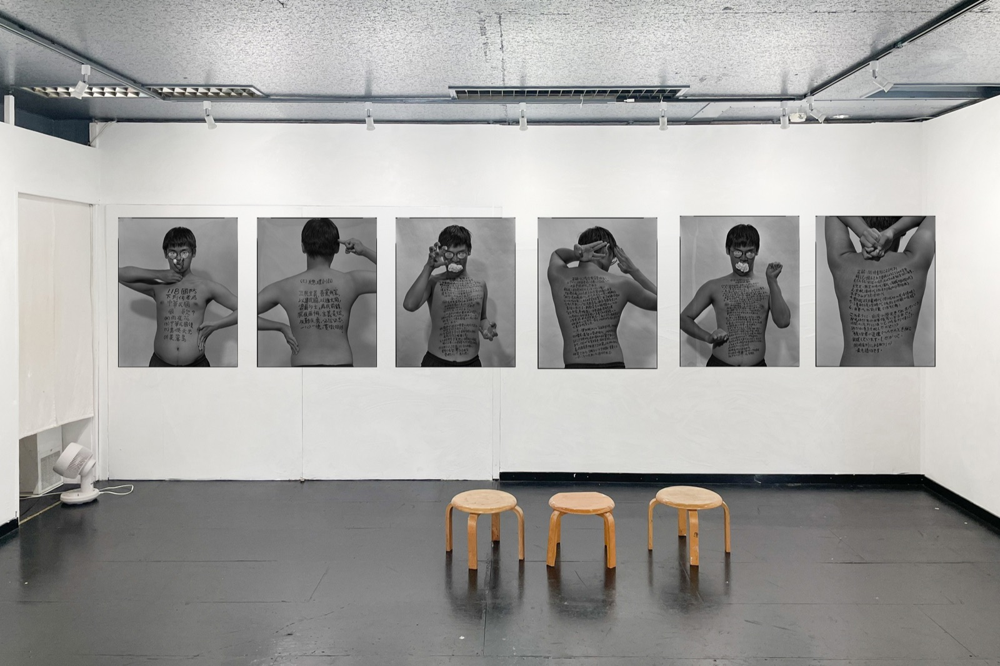
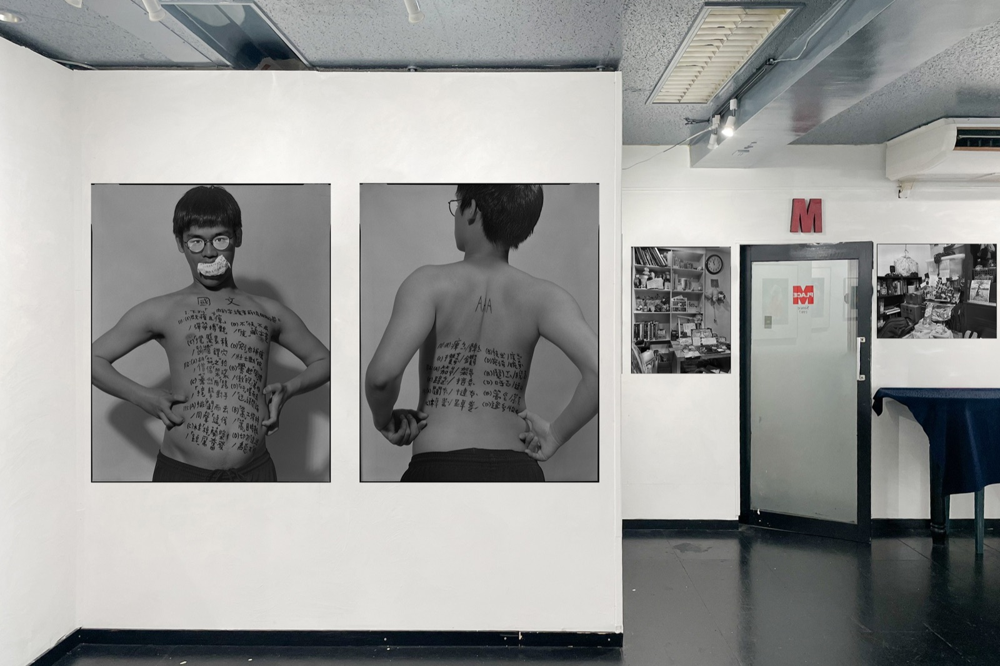
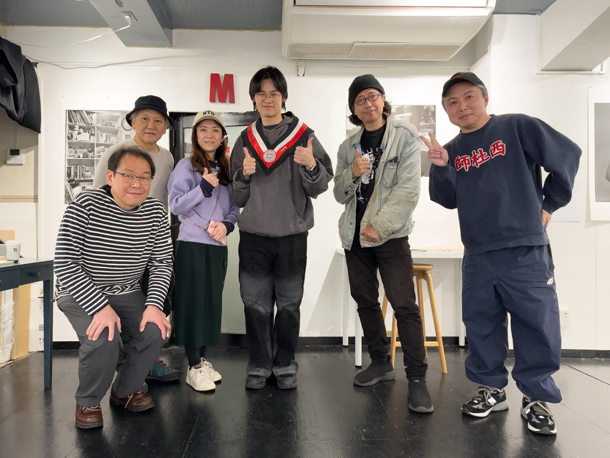

個展 Solo Exhibition · Place M 東京 2026
《正解：台湾の受験戦争の真剣勝負》
許哲睿🇯🇵個展《正解：台湾受験戦争の真剣勝負》
2026.03.16 - 2026.03.22
Open：12:00-19:00
Talk：3/21（土）19:00–20:00｜瀨戶正人 × 許哲睿
会場：@placem_tokyo ↗ Place M
（〒160-0022 東京都新宿区新宿1-2-11）

展場紀錄 · Place M








